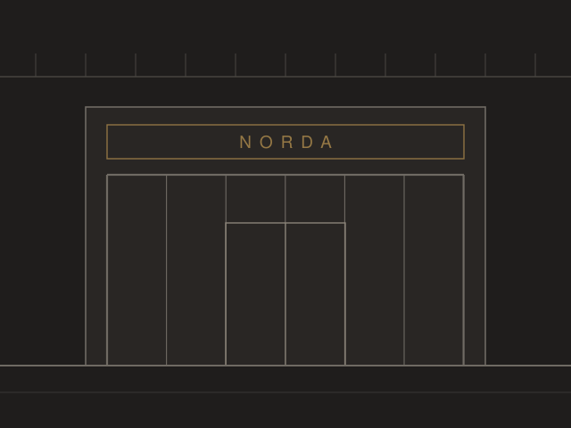
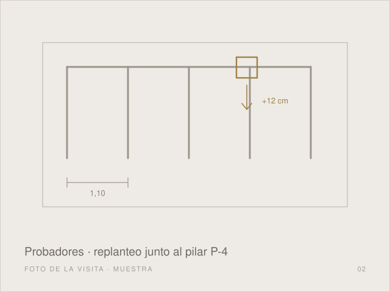
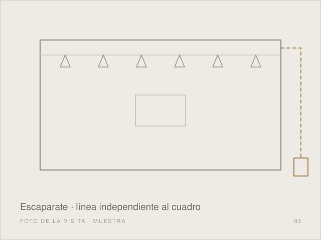
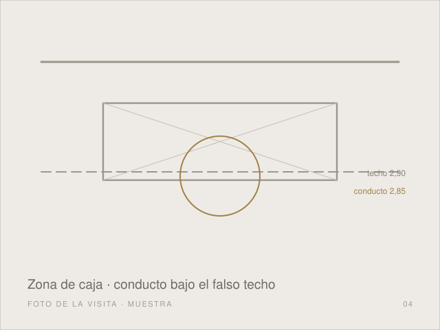
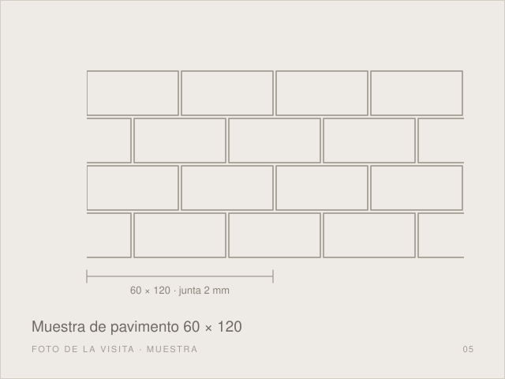
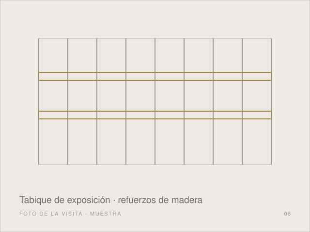

Visita de obra con 8 secciones documentadas, 6 evidencias fotográficas y 13 tareas detectadas (8 urgentes).
Temas tratados: Estado General y Planificación Replanteo de Tabiquería de Probadores Instalación Eléctrica de Escaparate Climatización y Falso Techo en Zona de Caja Muestra de Pavimento Mobiliario de la Marca y Escaparate
Las siguientes tareas detectadas en visitas anteriores permanecen pendientes de resolución:
Se realiza la tercera visita de obra, en la tercera de las seis semanas de plazo, con presencia del jefe de obra de Ouxion, la arquitecta de la marca y los industriales de electricidad, climatización, tabiquería y pavimento.
Están terminados el desmontaje del falso techo existente y las demoliciones. La tabiquería de placa de yeso está ejecutada en un 60 % aproximado y las instalaciones de electricidad y climatización avanzan por encima del falso techo.
La fecha de apertura del viernes 20 de noviembre se mantiene. Se imputan en esta visita nueve días de demora acumulada: cuatro por el mobiliario de la marca, tres por la licencia de actividad y dos por el suministro de los proyectores LED. Para absorberlos se adelanta la pintura de techos a la semana 4 y el montaje del mobiliario se hará en dos turnos.

Se revisa en obra el replanteo de los cinco probadores con la arquitecta de la marca. El manual de la marca fija un ancho libre de 1,10 m por cabina y una cabina accesible con giro de 1,50 m de diámetro.
El pilar P-4 invade la cabina 4 en unos 9 cm, situación que no recoge el plano de la marca. Se acuerda desplazar 12 cm el módulo de las cabinas 3 y 4 hacia el almacén. La arquitecta lo aprueba en la visita y se marca de nuevo en el suelo con láser.
No se cierra la segunda cara de los tabiques de probadores hasta que el industrial de electricidad haya pasado el cableado de iluminación y tomas de las cabinas.

Las normas técnicas del centro comercial exigen que la iluminación del escaparate vaya en una línea independiente, con reloj astronómico, para que pueda quedar encendida fuera del horario de la tienda. En el cuadro actual no está prevista.
Se indica al industrial de electricidad que tienda la línea independiente desde el cuadro general hasta el carril del escaparate antes del cierre del falso techo en esa zona.
Falta también la caja de registro para la pantalla del escaparate. La marca facilitará la cota exacta; mientras tanto se deja la canalización preparada.

El conducto principal de impulsión cruza la zona de caja con su cara inferior a 2,85 m, mientras que el falso techo continuo va a 2,90 m. Con esa diferencia no puede cerrarse el techo en ese tramo.
El industrial de climatización propone sustituir ese tramo por un conducto rectangular de menor canto o desviarlo por el lateral del almacén. Antes de ejecutar debe enviar la solución elegida a Ouxion y a la marca.
El industrial de tabiquería no cierra el techo en la zona de caja hasta que quede resuelta la interferencia. Los registros de la máquina interior deben coordinarse con el despiece del techo.

Se coloca en obra la muestra del porcelánico rectificado de 60 × 120 cm elegido por la marca. La arquitecta aprueba el color y el formato, con junta de 2 mm en gris perla.
En la zona del escaparate la solera presenta un desnivel de unos 8 mm respecto al resto del local. Se aplicará autonivelante en esa zona antes de colocar el pavimento.

La marca comunica que el mobiliario de su proveedor central llegará el viernes 13 de noviembre, cuatro días más tarde de lo previsto. Se imputa la demora a la marca. Para llegar a la apertura, el montaje se hará en dos turnos del 13 al 18 de noviembre.
Antes de cerrar los tabiques de exposición deben colocarse los refuerzos de madera para el mobiliario mural. El industrial de mobiliario enviará el plano de anclajes para que el de tabiquería los sitúe.
El vidrio del escaparate no se puede medir hasta que esté colocado el perfil oculto. El industrial de escaparate tomará la medida definitiva en cuanto el perfil esté fijado.

Se recuerda que la carga y descarga solo se permite antes de las 10:00 h por el muelle del centro, y que el pasillo frente al local debe quedar protegido y limpio al final de cada jornada.
Para soldar la estructura del rótulo de fachada hace falta el permiso de trabajos en caliente del centro comercial. Se tramitará antes de iniciar ese trabajo.
Próxima visita prevista el miércoles 4 de noviembre a las 08:30 h. Se pide la asistencia de los industriales de climatización, tabiquería y escaparate.